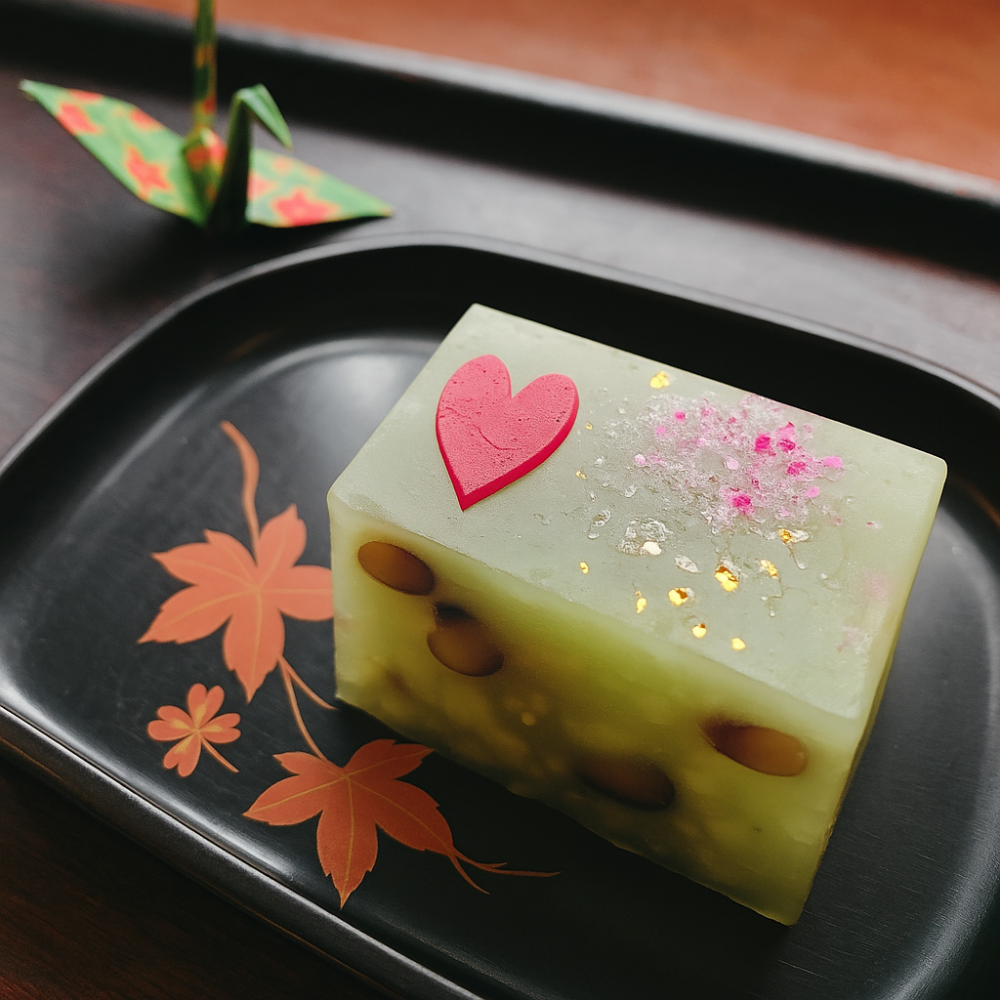
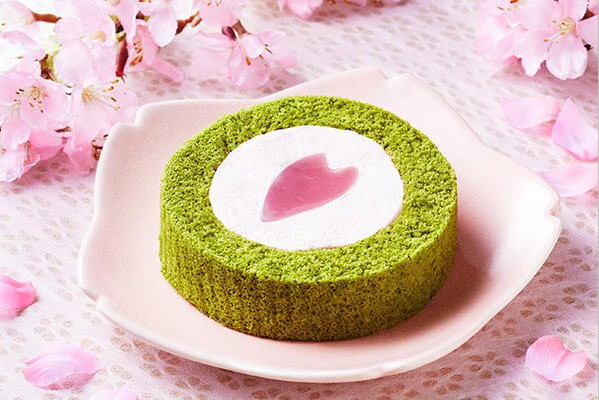
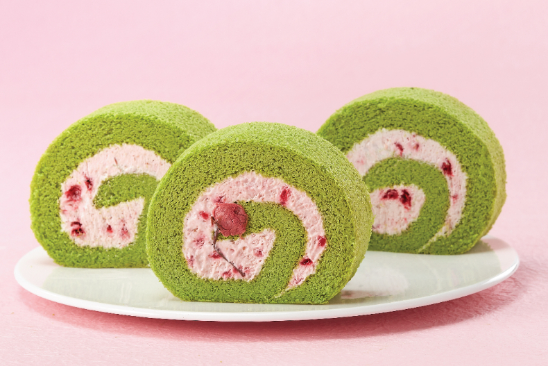
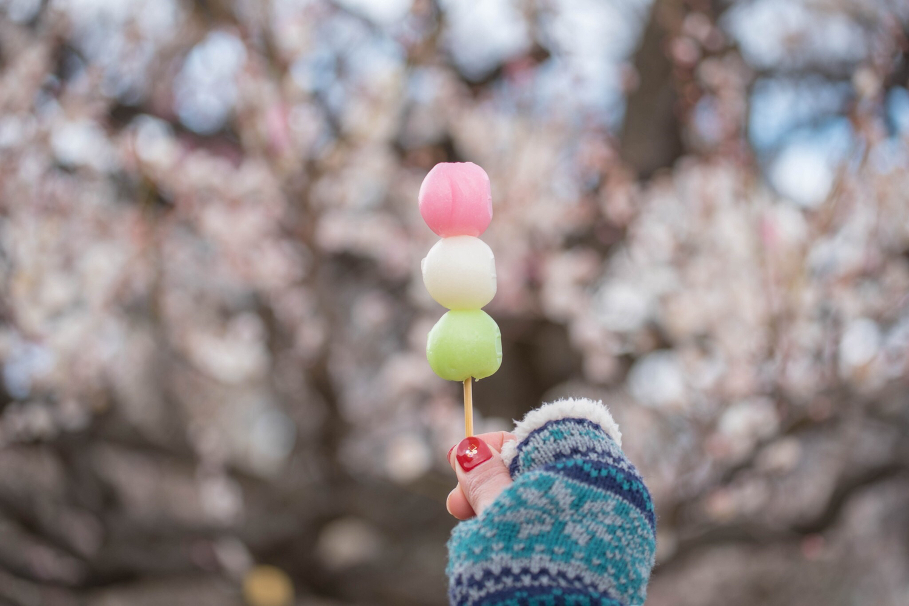
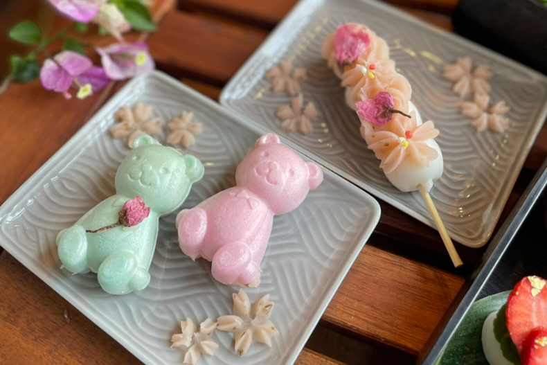
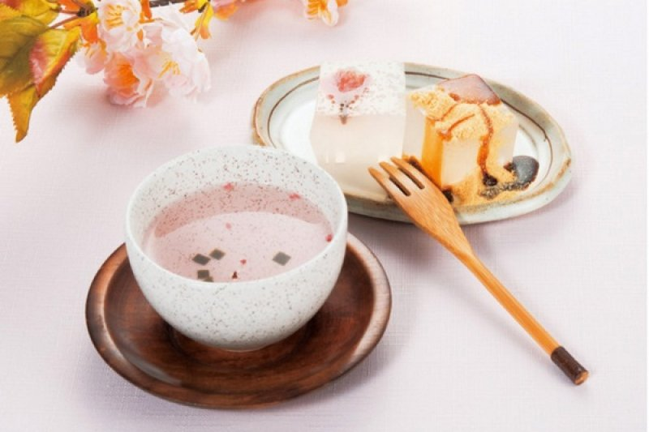
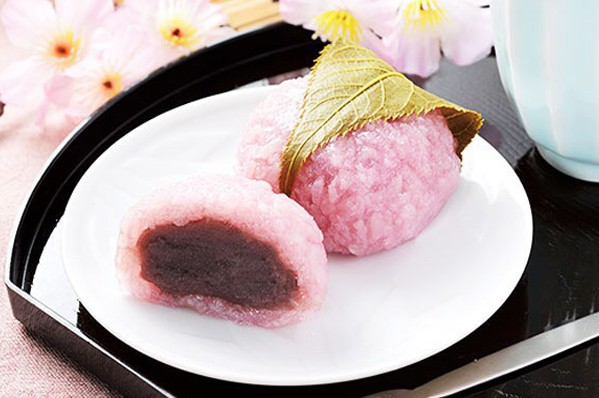
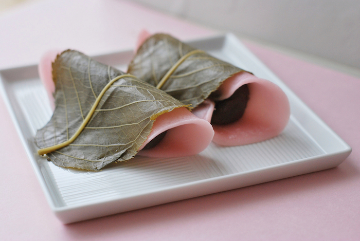

抹茶櫻花羊羹
傳統日式羊羹融合香濃抹茶與淡雅櫻花,細膩Q彈的口感,甜度恰到好處。咬下去能感受到抹茶的清新與花香的層次，無論是下午茶或作為伴手禮，都是體驗日式風情的好選擇。

櫻花抹茶海綿蛋糕
粉嫩櫻花慕斯與香草、乳酪層層堆疊，每一口都充滿細緻綿密的口感。入口時淡雅櫻花香緩緩散發，讓人彷彿置身春日花海。這道蛋糕不僅視覺夢幻，也是賞櫻季節最受歡迎的限定甜點。

抹茶櫻花瑞士捲
蓬鬆抹茶蛋糕捲入粉嫩櫻花奶油餡，視覺與味覺層層交織。茶香濃郁，花香清新，每一口都能感受到春天的氣息。推薦搭配熱茶享用，讓口感更加細緻，令人回味無窮。

花見三色丸子
三色糰子分別象徵春天的櫻花、嫩芽與純淨,口感Q彈、甜味適中。外型繽紛討喜,是日本花見時期不可或缺的小吃。無論搭配熱茶或作為野餐甜點,都能為賞花增添樂趣。

櫻花餅乾與甜點組合
以櫻花為主題的手工餅乾與各式和菓子，香酥細膩、造型精美。淡淡花香與適中的甜度，是伴手禮或下午茶的理想選擇。每一口都能感受到春日氣息，帶來愉悅好心情。

櫻花甘酒與小點心
櫻花甘酒是一種融合鹽漬櫻花與米麴釀製的傳統飲品，呈現出夢幻的粉色。風味溫潤甘甜，帶有淡淡的花香與米香。搭配日式小點心，無論冷飲或熱飲，都能為賞花時光增添一抹柔和的春日氛圍

傳統櫻葉餅
傳統櫻葉餅以柔軟的麻糬外皮包裹細緻紅豆餡，外層再用鹽漬櫻葉捲起。咬下時可感受到櫻葉特有的鹹香和櫻花的微妙清香，甜而不膩、層次分明，是日本春天最具代表性的和菓子之一。

櫻花道明寺糯米餅
櫻花道明寺糯米餅採用道明寺糯米製成,外觀透明微紅,內餡為細膩紅豆。特別之處在於糯米顆粒分明,口感Q彈有嚼勁。外層包裹鹽漬櫻葉,花香與糯米香交織,是春季不可錯過的經典賞花點心。

櫻花果凍
這款櫻花果凍選用春季限定的鹽漬櫻花入味，果凍質地柔嫩滑順，入口即化，帶有淡淡的櫻花清香與微甜口感，視覺與味覺兼具。搭配典雅花盤，更顯日式風情，是賞櫻時節最應景的夢幻甜點。